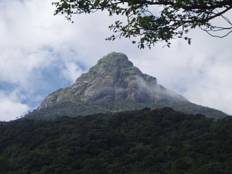

Places For Visit
Home
Places
Contact us
About us
For Your Travel Convenience
TRAIN TIME TABLE
Name
From
Time
To
Time
Frequency
Podi Manike
Colombo Fort
5.55 A.M
Badulla
4.20 P.M
Daily
Inter City Express
Colombo Fort
7.35 A.M
Kandy
10.00 A.M
Daily
Express
Colombo Fort
10.30 A.M
Matale
4.15 P.M
Daily
Express
Colombo Fort
12.40 P.M
Hatton
8.20 P.M
Daily
Night Mail
Matara
6.30 P.M
Trincomalee
8.45 A.M
Daily
Galu Kumari
Maradana
1.40 P.M
Matara
6.40 P.M
Monday to Friday
SIGIRIYA:
Sigiriya Rock is one of the most popular places to visit in all of Sri Lanka. In fact, many visitors make the trip to Sigiriya purely to see this ancient fortress. King Kashyapa chose the rock back in 477 AD to be his new capital. He built the palace on Sigiriya Rock, and about halfway up, he also built an enormous lion used as a gateway. The entire structure is very impressive, and before climbing the rock, I recommend you visit the museum below to read up on the area. I compare Sigiriya Rock to places such as Machu Picchu simply because of the huge effort that would be needed to construct such a large palace on a freestanding rock. It takes around 2 hours to climb Sigiriya Rock if you take your time and enjoy the views. However, some people do take longer, especially if you’re visiting during the hottest part of the day (there are 1,200 steps.) The entrance fee to Sigiriya Rock is $35 USD and includes a visit to the museum. If you’re looking for a guide and transport to Sigiriya, this organized tour is a great option. There’s nothing quite like having a friendly local with you to show you the best spots, and we had a great time learning all about Sri Lanka from our guide! You also have the option of going in a private car or tuk-tuk, it’s totally up to you. Tickets start from just $41 USD for a group of 3 in a tuk-tuk, or $60 USD for a group of 4 in a car. That’s fantastic value!
ADAM'S PEAK:

Adam’s Peak is arguably one of the most important cultural places to the Sri Lankan people. To them, it’s a pilgrimage of high religious significance, and it’s quickly become a must-see among visitors. However, it’s not about the religious significance for many tourists like myself, but more about the breathtaking views and walking with the Sri Lankan people. The hike to Adam’s Peak is most commonly done in the early hours of the morning in order to reach the summit for sunrise. However, Adam’s Peak is not for the faint-hearted and does climb a whopping 1,000 meters in elevation. The actual Peak sits at 2,243 meters (7,358 ft) above sea level and the hike takes around 4 to 6 hours to complete in total. Adams Peak is usually visited from Kandy, and tours leave early in the morning. However, you can also hike Adams Peak on day trips from Colombo and Nuwara Eliya. Tours include transport to and from Adam’s Peak as well as a local guide.
NILAVELI BEACH:
Only a 15-minute drive from Trincomalee is the lesser-known destination called Nilaveli. Nilaveli Beach is a pristine white sandy beach that is one of the best beaches in all of Sri Lanka. Here you can swim, relax in the sand, or even go snorkeling. It’s a stunning area any beach lover will be impressed with. One of the things that make Nilaveli Beach so beautiful is that it is not very developed or busy. There are very few beachfront restaurants meaning the beach isn’t cluttered with chairs and tables like many of the more popular beaches in Sri Lanka. You can visit Nilaveli on a day trip from Trincomalee or choose to spend the night. There are plenty of amazing guesthouses in Nilaveli to choose from, so you can spend as long as you’d like in this tiny beach paradise!
KNUCKLES MOUNTAIN RANGE:
The Knuckles Mountain Range is a very scenic mountainous area in central Sri Lanka. The range can be reached in only an hour or so drive from Kandy. Once here, you can choose to go on a scenic drive and take in the views or tackle one of the many hikes in the area. We drove into the Knuckles and then went on a short hike called “Mini World’s End.” Exploring the Knuckles means you will see lots of lush forests as well as enjoy views of the surrounding lakes and mountains. For those who really want to tackle some longer hikes in the Knuckles, consider doing the Nitro Caves hike or the Duwili Ella trail. You can easily explore the Knuckles on your own if you have your own transport. Otherwise, there are plenty of day tours to waterfalls from Kandy including this 3-6 hour hidden waterfall tour. There are actually quite a few amazing waterfalls to be found here, and taking in the sight of them amongst the lush valleys is mind-blowing! This tour also includes all transport, a traditional lunch, as well as guidance along the hike from Wattegama to Bambarella. Tickets also cost just $53 USD per person, which we think is pretty great considering everything involved.
NINE ARCH BRIDGE:
The Nine Arch Bridge is one of the most photographed places in Sri Lanka – but that’s because it is just so beautiful! The bridge towers above a gorge full of tea fields and makes for the perfect place to visit in Sri Lanka to take your next favorite travel photo. If you want to see a train drive by you’ll have to visit during specific times based on the train schedule. I recommend going early in the morning as there are two trains that pass by at around 6:15 am and 6:45 am each morning (double-check this with your hotel before you leave as the train schedule can change seasonally). Ella is easily one of the best places to visit in Sri Lanka and the Nine Arch Bridge is just one of the many things to do in Ella! Be sure to spend a couple of days there and book awesome accommodation in advance to avoid missing out.